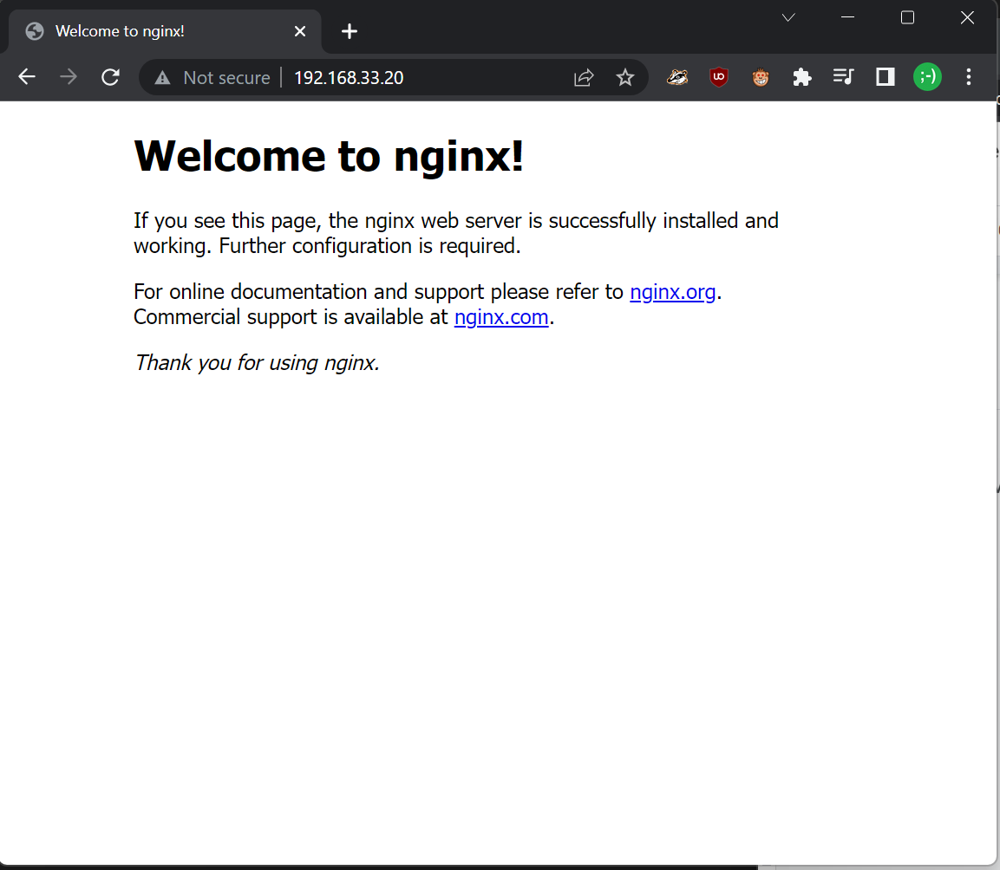

Vagrant is a virtualization tool used to create development environments that can be consistently and easily re-produced among team members. Vagrant builds a Virtual Machine (VM) based on the specifications in the Vagrantfile. It uses ruby syntax.
On windows you can use:
winget install vagrant
Other methods are available on the official site.
Create a new directory and inside it execute
vagrant init debian/bullseye64
This will create a Vagrantfile inside it.
Vagrant supports multiple Providers, which allow it to create virtual machines on different technologies: VirtualBox, VMware, Hyper-V. Many options are standardized, but for some there exists custom configuration. You can check the provider's documentation for more details.
Edit the Vagrantfile file and update the virtualbox section to this:
config.vm.provider "virtualbox" do |vb|
vb.memory = "1024"
vb.cpus = 2
endWe are ready to start our first machine. On the command line in the same folder as the Vagrantfile do:
vagrant up
When the script finishes you will have a new VirtualBox VM up and running and ssh port forwarded so that you can connect to it.
Vagrant generates custom SSH keys for each VM.
To connect to it you can do:
vagrant ssh
Or if you want to use you own ssh client you can get the connection information with:
vagrant ssh-config
After exiting you can vagrant halt, vagrant suspend or even vagrant destroy your VM.
Check the documentation for more commands.
It is useful to automate not only the creation of the VM, but also its initial configuration.
Make sure that the VM is not running with:
vagrant status
Currently our machine is behind a NAT network and only forwarded ports are accessible. We will switch to a private host-only network and give a static ip to the VM.
...
config.vm.network "private_network", ip: "192.168.33.20"
...Find the provision example in the file and adapt it to install nginx. The provision instruction can be inline shell commands or a path to a bash script.
...
config.vm.provision "shell", inline: <<-SHELL
apt-get update
apt-get install -y nginx
SHELL
...Upon starting Vagrant reconfigures the VM, adding the new network configuration.
vagrant up
However, since we already created the VM before, it will not automatically apply the provision script (to avoid running it multiple times).
To force the provisioning use:
vagrant provision
We can now access our nginx at http://192.168.33.20

If we now longer require the virtual machine we can delete it with:
vagrant destroy
You can use a Vagrantfile to configure multiple machines. Options on config.vm Object apply to all VMs, but you can define custom settings inside a define block to create multiple machines.
We will create a web and db machine on the same network to deploy the guestbook app with a separate PostgreSQL server.
Vagrant.configure("2") do |config|
config.vm.box = "debian/bullseye64"
config.vm.provider "virtualbox" do |vb|
vb.memory = "1024"
vb.cpus = 2
end
config.vm.define "db" do |db|
db.vm.hostname = "db"
db.vm.network "private_network", ip: "192.168.33.10"
db.vm.provision "shell", path: "postgres-provision.sh"
end
config.vm.define "web" do |web|
web.vm.hostname = "web"
web.vm.network "private_network", ip: "192.168.33.11"
end
endIn addition to the Vagrantfile create a new postgres-provision.sh file which installs PostgreSQL and configures it to accept external connections.
#!/bin/bash
sudo apt-get update && sudo apt-get -y install postgresql
# set the default to listen to all addresses
sudo sed -i "/port*/a listen_addresses = '*'" /etc/postgresql/13/main/postgresql.conf
# allow any authentication mechanism from any client
sudo sed -i "$ a host all all all trust" /etc/postgresql/13/main/pg_hba.conf
# create db named guestbook and its user
sudo su postgres -c "createdb guestbook"
sudo su postgres -c "psql -d guestbook -c \"create user guestbook with encrypted password 'guestbook'\""
sudo su postgres -c "psql -d guestbook -c \"grant all privileges on database guestbook to guestbook\""
# restart the service to allow changes to take effect
sudo systemctl restart postgresqlSetting up the web server
Start by logging into the web VM.
vagrant ssh web
First try to manually deploy the guestbook app using the version inside the 02_mvp_modules_sqlite3 folder. By default it uses sqlite, to switch to PostgreSQL edit gbmodel/__init__.py and add a .env file with the required environment variables (look at .env.sample).
Test that everything is running on http://192.168.33.11:5000/
It is your assignment to create the web web-provision.sh script and link it inside the Vagrantfile.
Complete the scripts with the commands you tested with the manual install
cat > filename << EOF HELLO=world EOF
Going further (optional): Can you make a full setup with nginx and gunicorn?